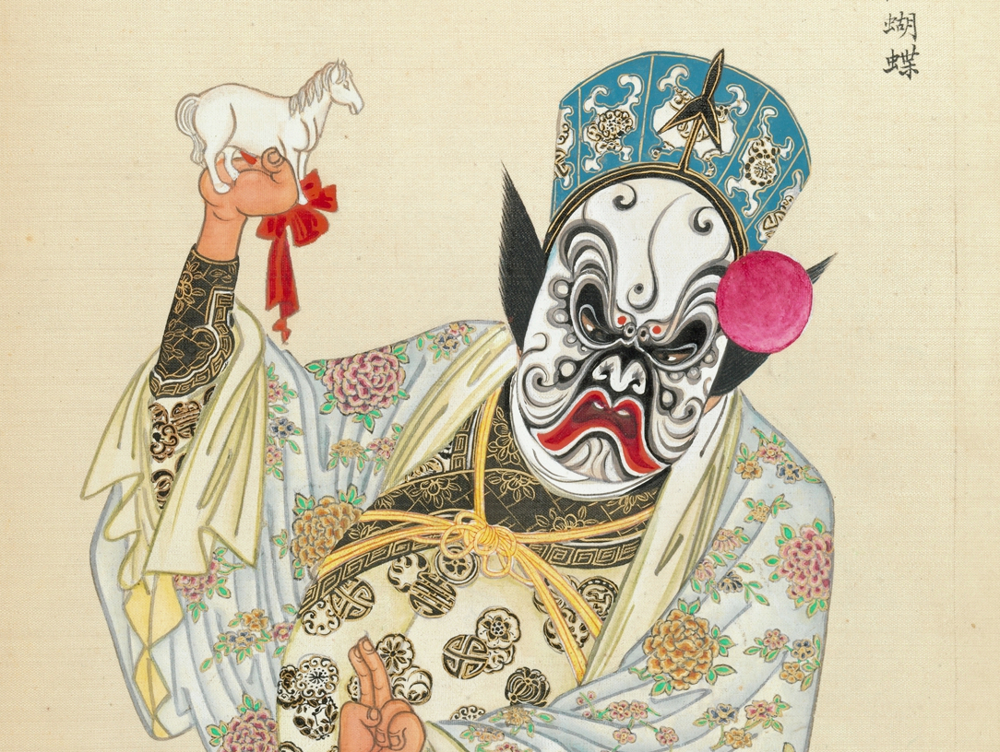
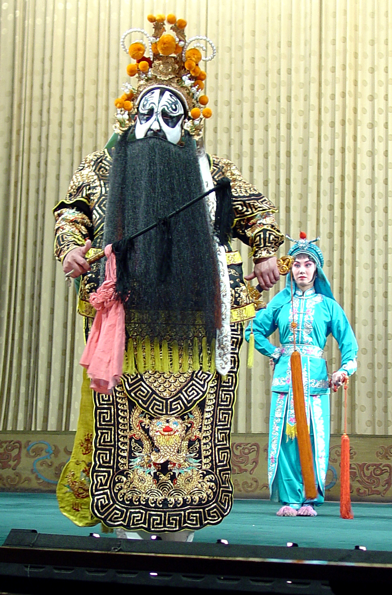

...
Musical Analysis
The Drunken Concubine
The Drunken Concubine, or A Drunken Beauty, is a classic play considered a masterpiece, sung by the Concubine herself. It is sung using Beijing dialect, with librettos composed to a strict set of rules prioritising rhymes as well as forms. As it is a play, it tells stories of history, politics, and society, through four main types of characters: sheng, dan, jing, and chou. Here, it is sung by a character depicting Dan (woman).
Motifs & Characteristics
Pitch of Voice
The ugly, exaggerated costumes in Peking Opera are meant to be symbolic rather than realistic, they follow other traditional Chinese arts, prioritising meaning. Literal aspects are removed or stylised to represent intangible emotions. An example of this is removing sharp lines, as a common stylisation method is roundness. The costumes are used as symbolic expressions to convey traditional Chinese core values, packed with symbols. Dragons and phoenix are the most prominent (representing strength, health, and fortune), with birds, tigers, wild geese expressing Chinese core values, which came from imperial ideology based on Confucian ideas, practiced throughout the Qing Dynasty, where Peking Opera was developed.
The Drunken Concubine

Four Main Roles

Jing Character
Costume Designs
